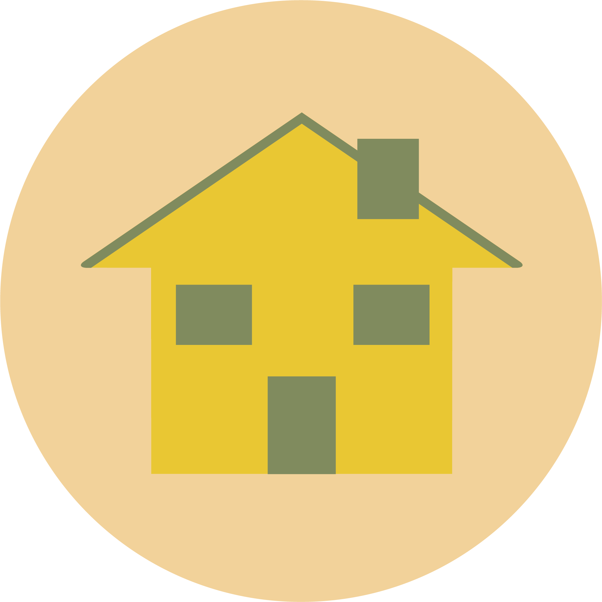
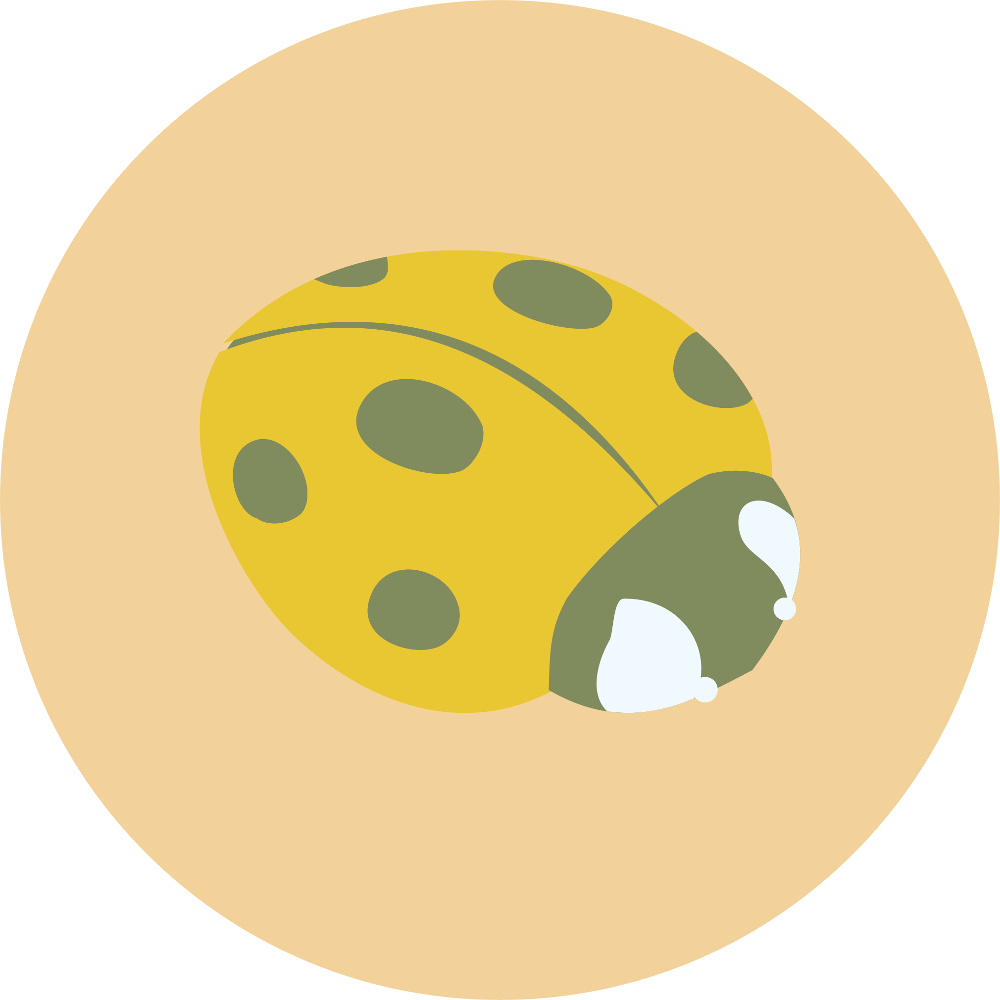
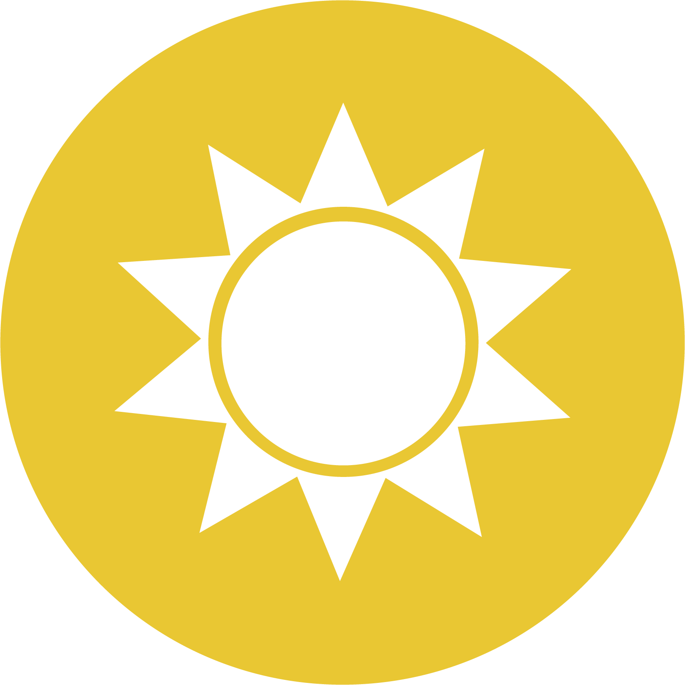
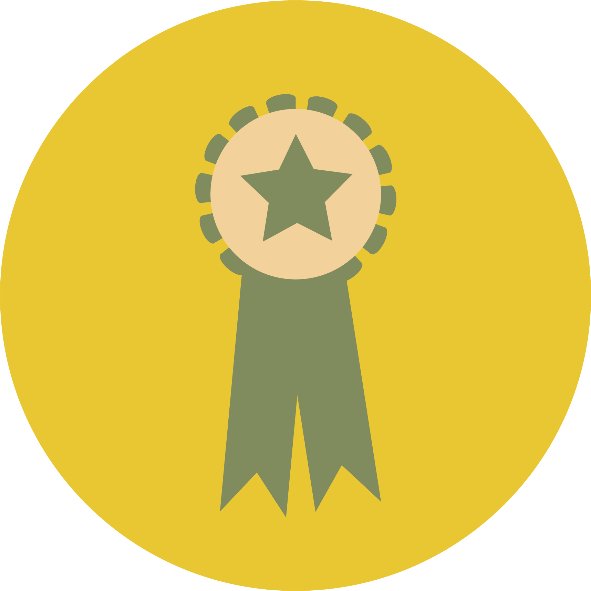

"En hverdag på Springbræt Aarhus byder på bevægelse og almen undervisning. Elevernes skolegang ligger typisk i tidsrummet 8.30-13.45 og starter ud med, at vi hver morgen mødes til en morgensamling, derefter går vi en powerwalk på omkring 15 minutter. Efter har almen undervisning med vægt på, at eleverne lærer redskaber til at begå sig. Bevægelsen i skoledagen efter dette vil variere, da eleverne er medbestemmende i dagens aktiviteter."

Vi har valgt at kalde vores form for idræt for Pædagogisk idræt. Alt for mange børn, unge og voksne mennesker oplever desværre at blive ‘valgt til sidst’ i forbindelse med idræt og bevægelse. Dette er vi MEGET imod. Derfor har vi valgt, at vi ikke kun spiller stikbold, rundbold, fodbold og alle de andre populære spil. Vi synes, at det er vigtigt, at eleverne præsenteres for forskellige og nye sportsgrene og vi ønsker med det at vise, at idræt STU er meget, meget andet end bare idræt.
Klik og mød Kenneth fra Springbræt Aarhus
"Hver dag skal gerne være en glæde. Det bliver den, når vi har det rart sammen og når vi laver noget, der er sjovt og meningsfuldt."
Vi tilbyder undervisning til eleverne i at kunne klare sig så selvstændigt som muligt. Herunder hjælp til NemID, e-boks, SKAT og meget andet.

Vi har fokus på, at eleverne er medbestemmende i, hvad de ønsker at blive bedre til, så de er bedre rustet til fremtiden.

Eleverne modtager hver især et individuelt kompetencebevis efter endt uddannelse.